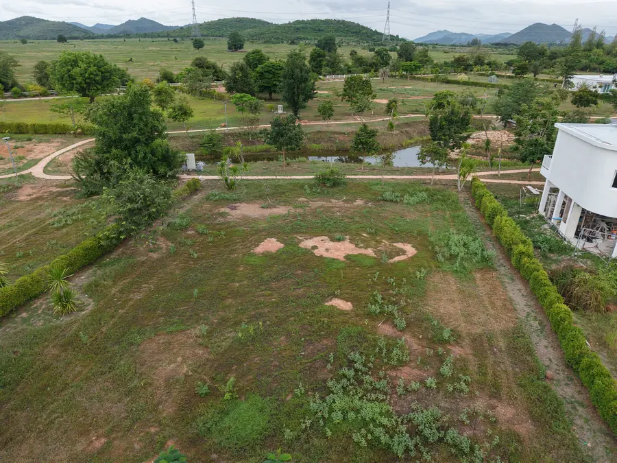
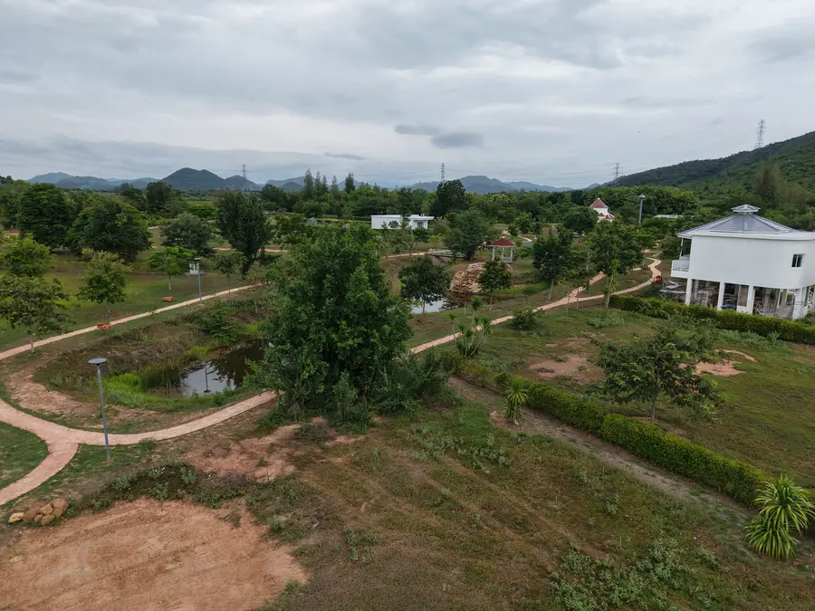
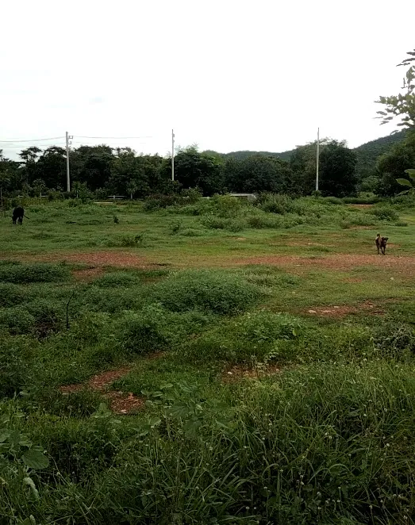
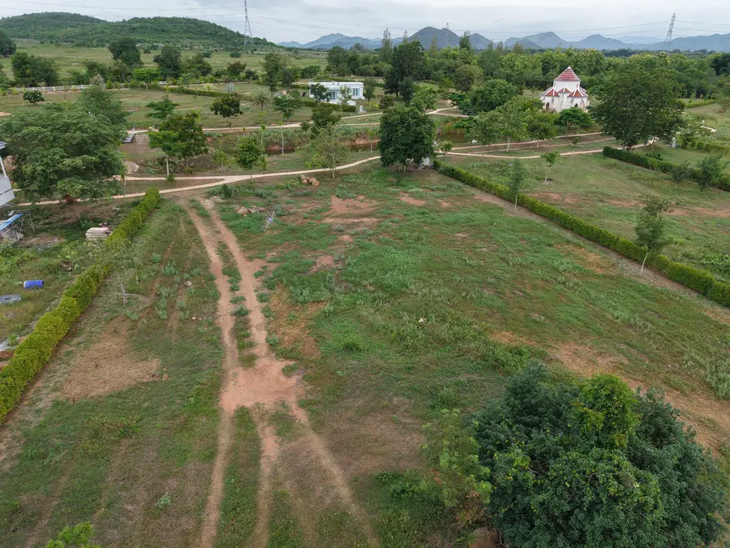
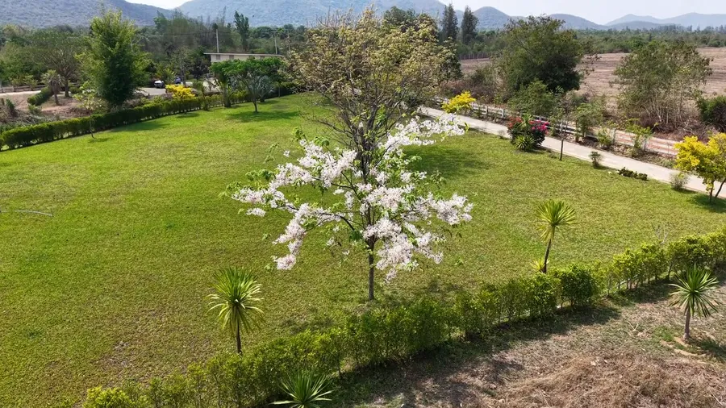
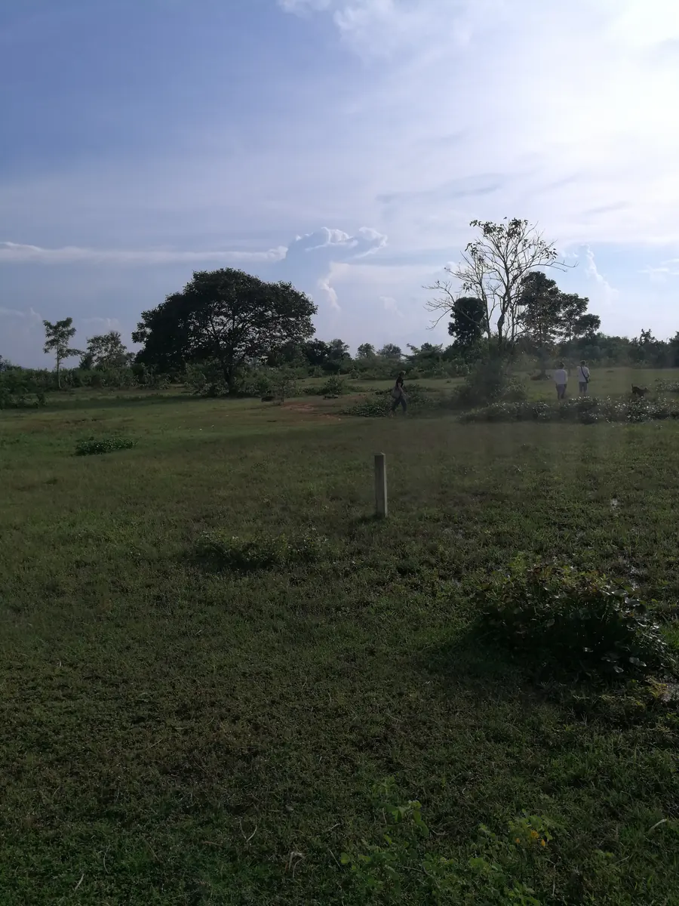

Terrain 2a2 500 000 THB
1 070 m² · 2 ngan 70 wah
Terrain d'entrée. Vue sur le lac et l'île avec sala d'un côté, montagnes et forêt de l'autre. Plusieurs arbres déjà plantés.
Une petite communauté résidentielle privée autour d'un lac, avec vue à 360° sur les montagnes. Six terrains restent disponibles, tous avec titre de propriété Chanote.
Natural Healthy Village est un lotissement de seize terrains résidentiels, dont six restent à vendre. Le site s'organise autour d'un lac privé avec une île et sa chapelle. Plus de 12 rai sont conservés en espaces communs.
Il s'agit exclusivement de terrains destinés à une résidence secondaire ou permanente. Ce n'est ni un hôtel, ni un complexe touristique, et aucun hébergement n'est proposé.
Situation de juillet 2026. Tous les terrains disposent d'un titre Chanote, la forme de titre foncier la plus sûre en Thaïlande.

Terrain d'entrée. Vue sur le lac et l'île avec sala d'un côté, montagnes et forêt de l'autre. Plusieurs arbres déjà plantés.

Proche de l'entrée, 80 m de façade sur l'allée intérieure, de quoi implanter plusieurs constructions. Vue dégagée sur le lac et l'île d'un côté, montagnes de l'autre. Arbres de pluie jamjuree plantés pour l'ombre future.

Vue sur le lac et l'île depuis l'allée intérieure, montagnes et forêt à l'arrière.

Vue sur les montagnes et la forêt environnante.

Photo : vue aérienne générale du lotissement, et non du terrain 9 lui-même. Photographies de ce terrain disponibles sur demande.

Le terrain le plus vaste encore disponible.
La loi thaïlandaise ne permet pas aux ressortissants étrangers de détenir un terrain en pleine propriété. À Natural Healthy Village, les acheteurs étrangers passent par un bail enregistré de 30 ans, renouvelable, sur un terrain adossé à un titre Chanote — une forme de jouissance à long terme couramment utilisée en Thaïlande pour le résidentiel. Les ressortissants thaïlandais peuvent acheter en pleine propriété.
Chaque situation personnelle étant différente, nous recommandons de consulter un avocat thaïlandais spécialisé en droit immobilier avant tout engagement. Pour le détail du cadre légal et les points à vérifier, voir notre guide d'achat pour acheteurs français.
Le projet se situe à Kaeng Krachan, dans la province de Phetchaburi, à proximité de Hua Hin et de Cha-am.
Triphasé fourni par la PEA, compteur individuel par terrain, câblage entièrement enterré.
Trois arrivées d'eau par terrain avec compteurs individuels. Puits profond privé et réserves sur le site.
Panneaux solaires en cours d'installation, dans une démarche d'autonomie énergétique.
Plus de 12 rai d'espaces communs, dont le lac privé et l'île avec sa chapelle.
Visites du site sur rendez-vous. Brochure complète disponible sur demande.